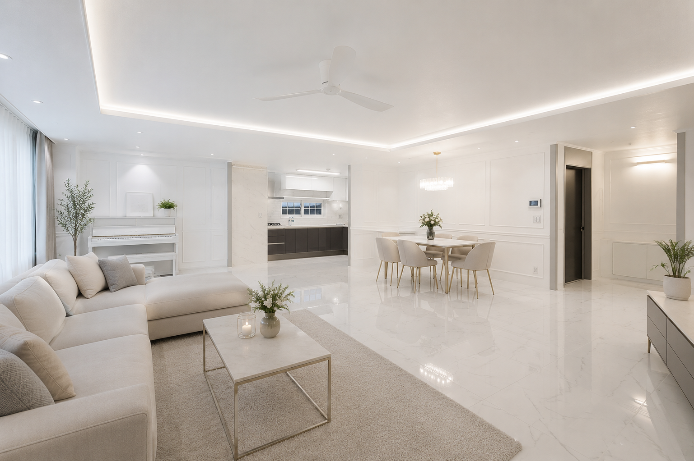
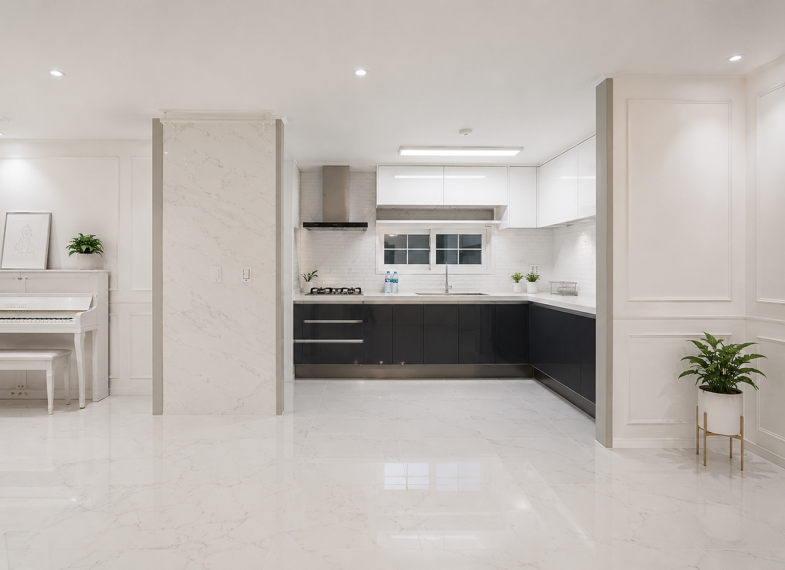
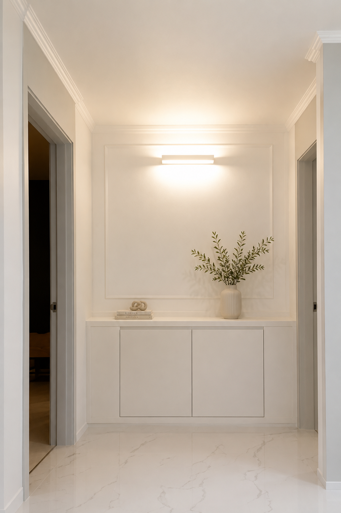
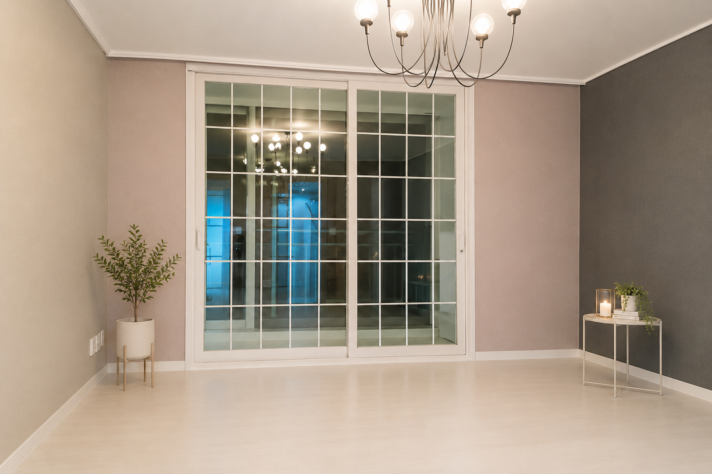
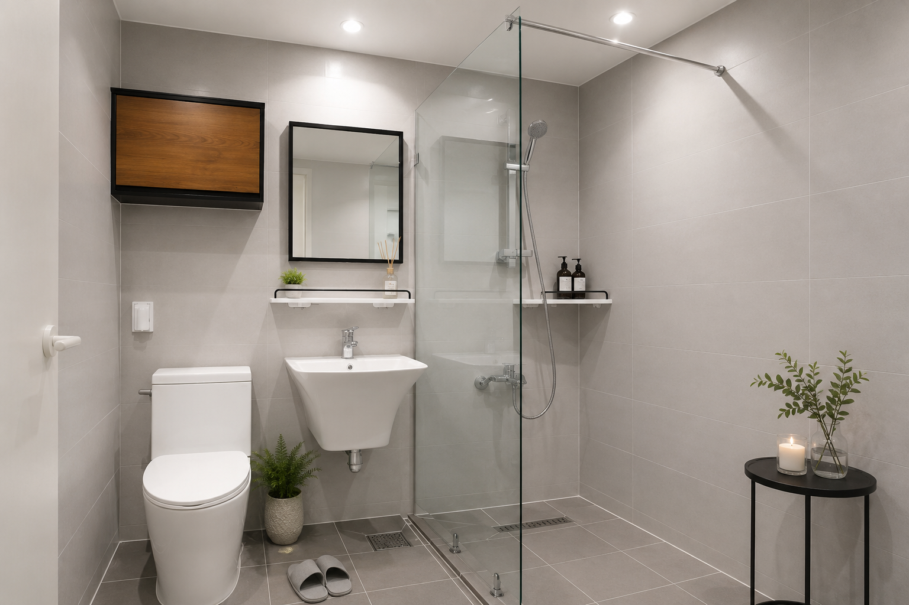
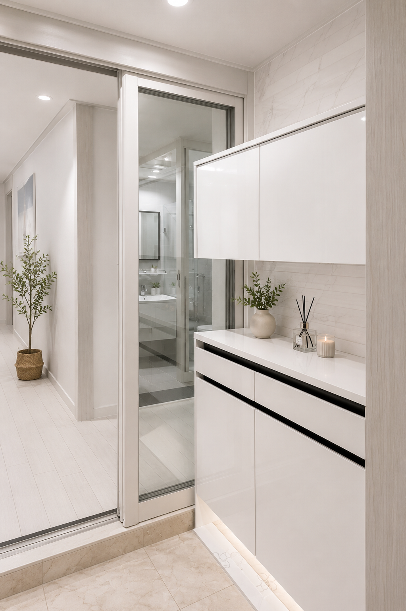
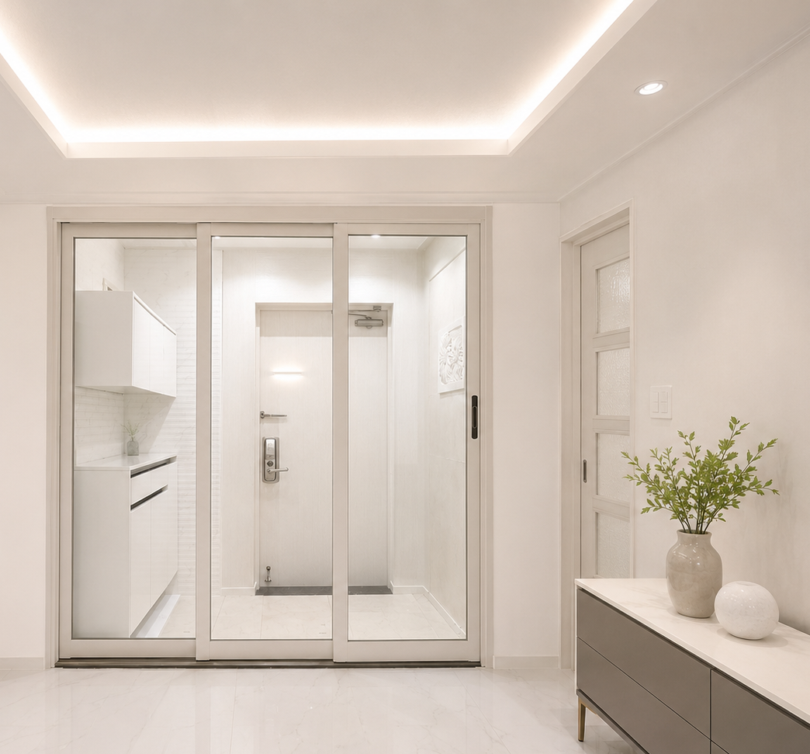

광진구 아파트 리모델링
웨인스코팅과 비앙코 타일의 조화로 클래식한 우아함과 절제된 미를 완성한 45평 아파트 리모델링

클래식한 디테일과 모던한 공간이 공존하는 집
광진구 아파트 45평형을 대상으로 진행한 전체 리모델링 프로젝트입니다. 화이트 톤을 기본으로 웨인스코팅과 비앙코 타일을 조합해 클래식한 분위기를 유지하면서도 공간이 무겁거나 과장되어 보이지 않도록 균형을 맞췄습니다. 거실과 주방, 현관, 복도와 욕실까지 전체 공간의 통일감을 유지하면서 생활의 편의성과 개방감을 함께 높였습니다.
거실과 주방이 하나로 이어지는 개방형 공간
거실에서 바라본 주방은 시야를 가로막는 요소를 최소화해 두 공간이 하나의 장면처럼 이어지도록 구성했습니다. 한샘 유로 8000 시리즈 주방 가구는 화이트 상부장과 다크 그레이 하부장을 조합해 밝은 공간에 안정적인 무게감을 더했습니다. 비앙코 타일 바닥은 거실에서 주방까지 연속적으로 이어져 공용 공간을 더욱 넓고 정돈된 인상으로 완성합니다.

방과 방을 연결하는 공간의 정돈
방과 방 사이의 공간은 단순한 이동 통로가 아니라 집 전체의 분위기를 이어주는 연결 지점으로 계획했습니다. 화이트 벽면과 몰딩 디테일, 밝은 바닥 마감을 통일해 공간이 좁거나 단절되어 보이지 않도록 구성했습니다. 복도 끝에는 맞춤 수납장을 배치하고 벽등을 더해 실용적인 수납 기능과 장식적인 완성도를 함께 확보했습니다.

채광과 개방감을 살린 개인 공간
방에서 바라본 창과 발코니는 자연광이 실내 깊숙이 들어오도록 넓은 개구부와 밝은 프레임을 중심으로 구성했습니다. 격자 프레임 창호와 클래식한 펜던트 조명이 절제된 벽면 색상과 어우러져 차분하면서도 품격 있는 분위기를 만듭니다. 발코니와 실내가 시각적으로 자연스럽게 이어져 실제 면적보다 한층 깊고 여유롭게 느껴지는 개인 공간으로 완성했습니다.

연그레이 원톤으로 넓어 보이게 완성한 욕실
욕실은 벽과 바닥을 연그레이 계열의 원톤 타일로 통일해 시각적인 경계를 줄이고 공간이 한층 넓어 보이도록 구성했습니다. 투명 유리 파티션으로 샤워 공간을 분리하면서도 개방감을 유지했으며, 우드 포인트 수납장과 선반을 더해 차가울 수 있는 그레이 톤에 따뜻한 균형감을 주었습니다. 수납 기능과 관리 편의성을 함께 고려한 실용적인 욕실 디자인입니다.

수납과 개방감을 함께 갖춘 현관
신발장 측에서 바라본 현관은 맞춤 수납장과 슬림 3연동 중문이 하나의 정돈된 구성으로 이어지도록 계획했습니다. 현관 수납장은 화이트 톤과 간결한 면 분할을 적용해 충분한 수납량을 확보하면서도 시각적으로 무겁지 않도록 정리했습니다. 망입유리 대신 투명 유리를 사용한 중문은 거실과 현관을 분리하면서도 시야를 열어두어 밝고 개방적인 첫인상을 만듭니다.

거실에서 현관까지 이어지는 하나의 공간 흐름
거실에서 바라본 중문과 현관은 웨인스코팅, 비앙코 타일, 화이트 톤 마감이 자연스럽게 이어지도록 구성했습니다. 투명한 3연동 중문은 공간의 경계를 분명하게 나누면서도 현관의 채광과 시야를 거실까지 연결해 답답함을 줄입니다. 거실, 다이닝, 주방과 현관이 서로 다른 역할을 유지하면서도 하나의 디자인 언어로 연결되는 개방형 주거공간을 완성했습니다.

핵심 설계 포인트
절제된 웨인스코팅
벽면에 클래식한 몰딩 디테일을 더하되 화이트 톤으로 통일해 과하지 않고 정돈된 분위기를 완성했습니다.
공간을 연결하는 비앙코 타일
거실과 주방, 현관에 밝은 비앙코 타일을 연속 적용해 넓어 보이는 효과와 은은한 고급감을 함께 확보했습니다.
공간에 자연스럽게 녹아든 수납
현관과 복도에 필요한 수납을 추가하면서도 벽면과 일체화된 디자인으로 시각적인 복잡함을 줄였습니다.
시야를 이어주는 투명 중문
슬림 3연동 중문에 투명 유리를 적용해 공간을 분리하면서도 채광과 개방감을 유지했습니다.
공간에 대한 다음 대화를 시작해 보세요.
주거·상업공간 디자인과 리모델링을 상담부터 설계, 시공과 준공까지 함께합니다.